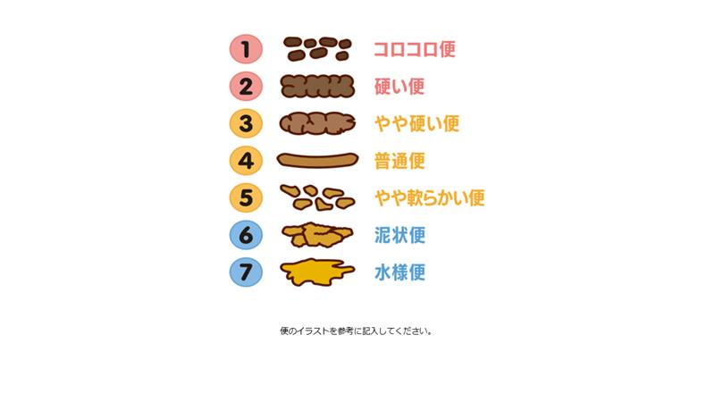

コンディション記録
1. 日付
2. 所属
3. 名前
※ フルネームで入力してください
4. 全般的体調
とても悪い
とても良い
5. 疲労感
全くない
とても強い
6. 睡眠時間（例：7.25, 7.5）
※ 手入力もできます
7. 睡眠の深さ
とても浅い
とても深い
8. 睡眠状況（複数選択）
夢を見た
何回も目覚めた
何回もトイレに行った
寝汗をかいた
寝付けなかった
普段より寝付けなかった
特になし
9. 食欲
全く無い
とてもある
10. 故障・怪我の有無
無
有
11. 故障・怪我の箇所
※ 故障・怪我がある場合は部位を具体的に入力してください（例：右足首）
12. 故障・怪我の程度
全くない
練習ができない
13. 練習強度
非常に楽
非常にきつい
14. 前日の排便の有無
有
無
便の形（1〜7）

15. 前日の便の形
選択してください
1
2
3
4
5
6
7
※ 上記の画像を参考に選択してください
16. 前日の走行距離（km）
※ 手入力もできます
17. SpO₂（％）
※ 手入力もできます
18. 脈拍数（拍/分）
※ 手入力もできます
19. 体温（℃）
※ 手入力もできます
20. 体重（kg）
※ 手入力もできます
21. 特記事項（複数選択）
特になし
咳
鼻水
頭痛
息苦しさ
下痢
喉の痛み
悪寒
腹痛
熱感
倦怠感
吐き気
痰
月経
月経痛（腰痛・下腹部痛等）
月経前不調（腰痛やむくみ、体重増加）
不正出血
服薬
その他
※ 特にない場合は「特になし」を選択してください
21-1. その他の症状
送信